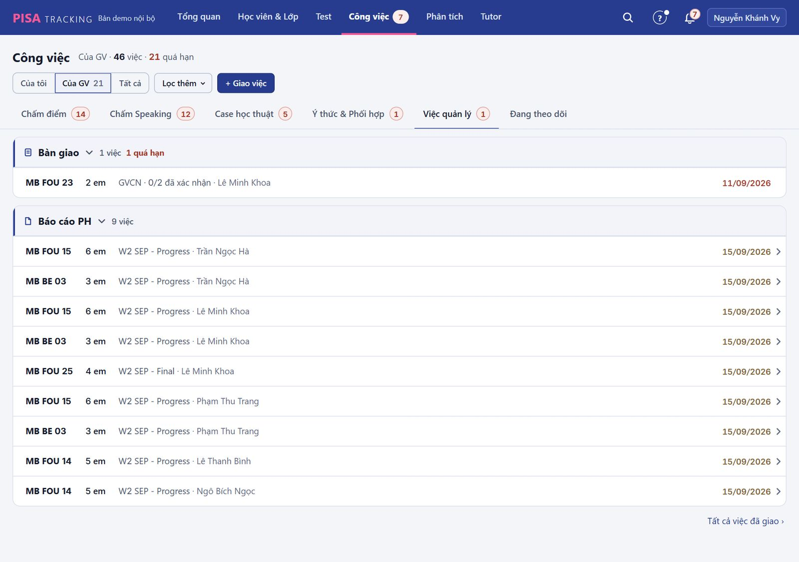
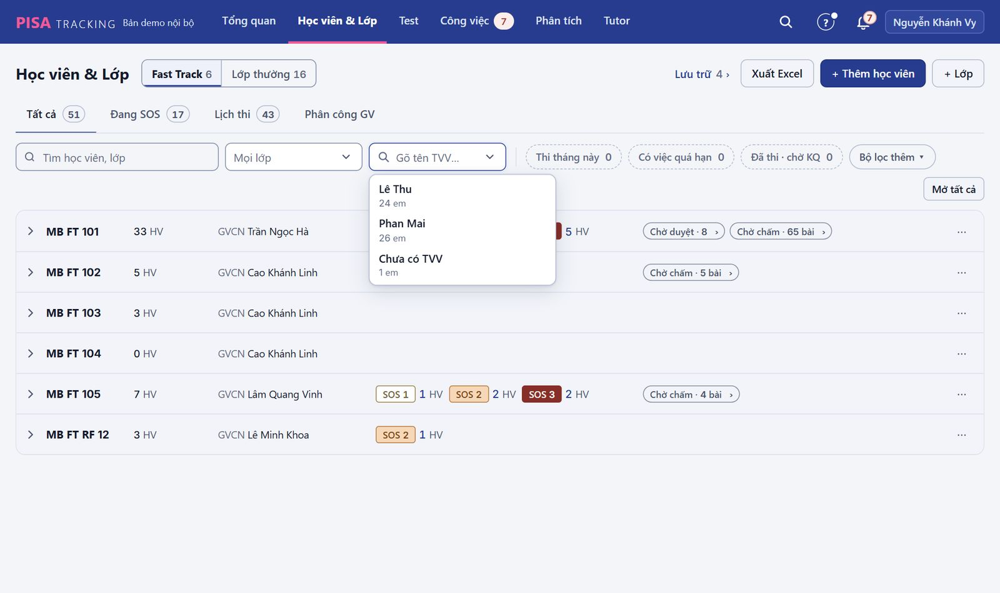
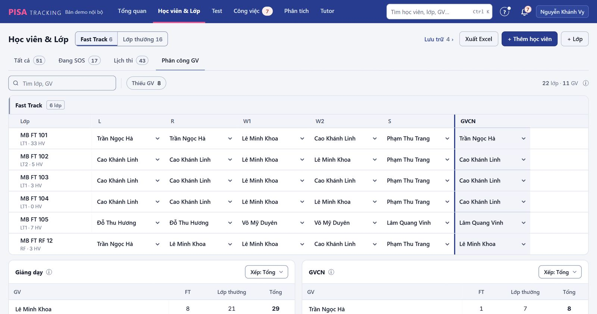
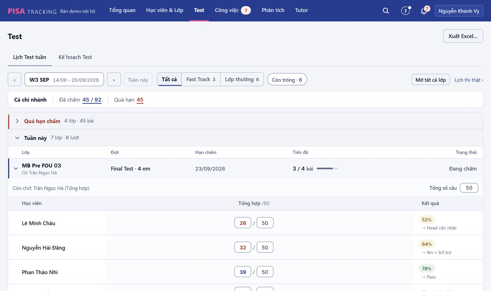
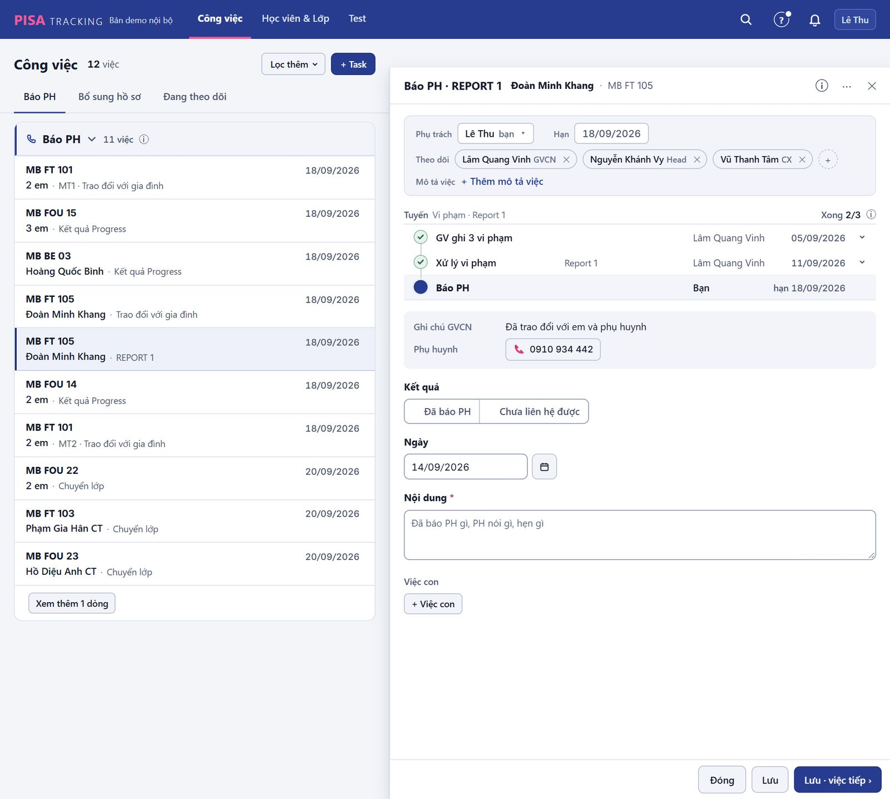
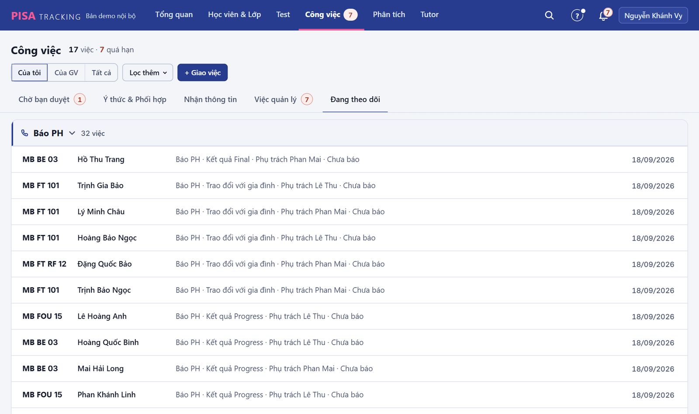
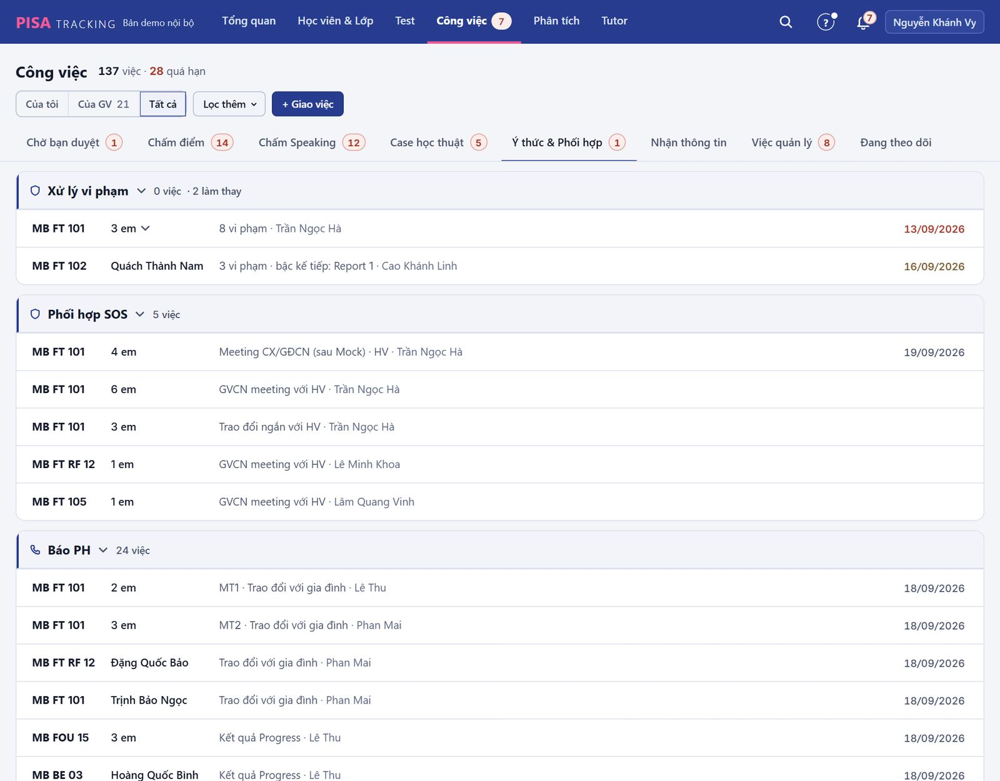
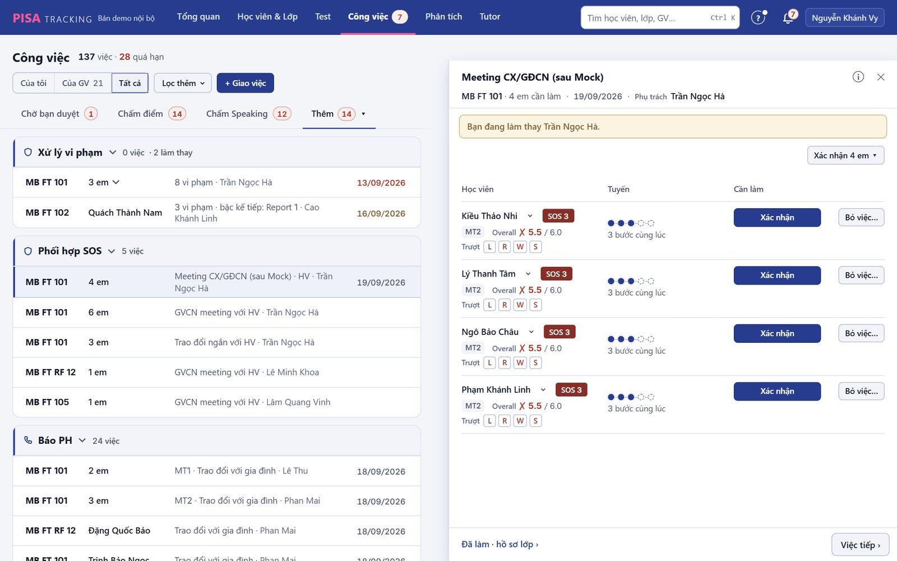
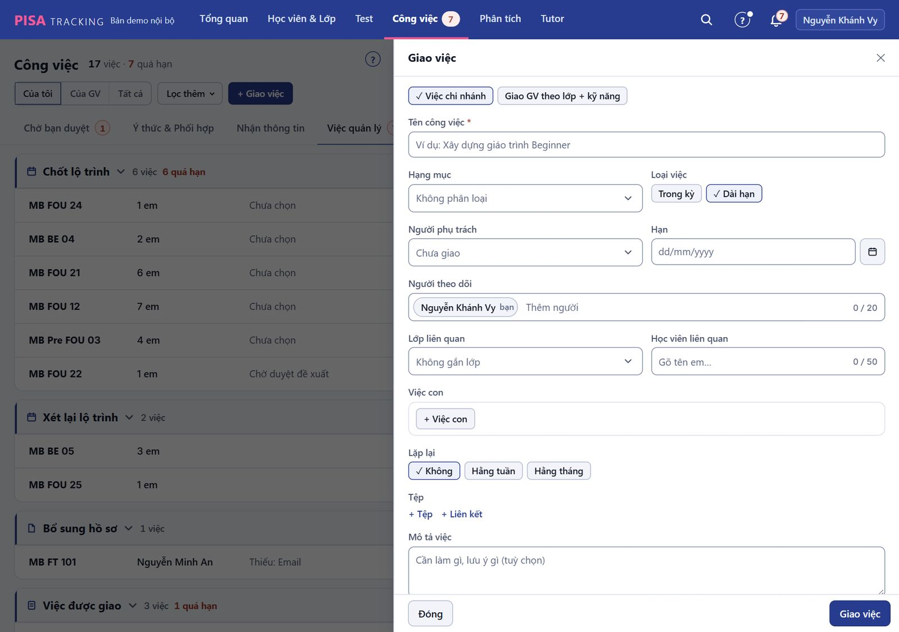
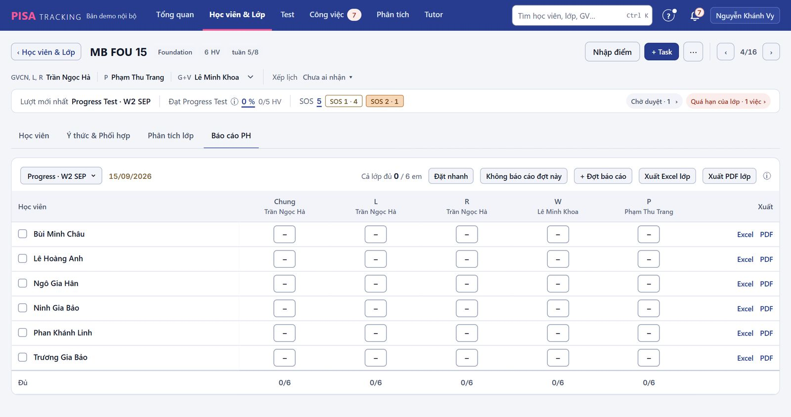

Bản 27/11/2026 — theo bản web mới nhất. Ô vàng “Sắp có” là phần đang làm, chưa lên web.
Ảnh chụp từ bản demo: mọi tên người, lớp, số điện thoại là dữ liệu giả.
Tổng quan: ba ô GV quá hạn · Chờ duyệt · Em SOS cần chú ý. Bấm số để mở danh sách.
Công việc › Chờ bạn duyệt: quyết thẻ quá hạn trước (mục 5).
Công việc › Việc quản lý: việc tô đỏ (Chốt lộ trình, Lịch MT, Bàn giao…) trước.
Nhận thông tin (nếu có): xác nhận đã biết các lệnh chuyển lớp / đổi GV (mục 8.3).
Chuông 🔔: Việc cần làm + Cập nhật (tin vi phạm mới gom theo lớp).
Mỗi tuần nên trước thứ Sáu
Test › Kế hoạch Test: chip Chưa đủ lịch MT → xếp cho em còn thiếu (mục 6). Từ T6 tới CN lịch MT gần bị khoá, Head phải xác nhận thêm.
Test › Lịch Test tuần: Quá hạn chấm → nhắc GV hoặc nhập hộ; lọc Còn trống để xem ô chưa có điểm của tuần.
Công việc › Của GV và Đang theo dõi: việc GV, TVV đang tồn, quá hạn.
Học viên & Lớp › Mọi TVV › Chưa có TVV: gán TVV cho em mới (mục 4.2).
Lớp thường sắp Final
Từ thứ Hai tuần trước tuần Final: Chốt lộ trình (hạn T5 tuần đó). Sau Final: Xét lại lộ trình, Kỳ vọng lớp lên FT (mục 9).
Đầu khoá, lớp mới
Tạo lớp, thêm học viên, gán TVV, phân công GV, xếp lịch Test (mục 4, 6).
Mỗi tháng / kỳ
Phân tích (in, xuất Excel); Báo cáo PH quá hạn; số buổi Tutor (mục 16).
2. Tổng quan và Công việc của Head
Tổng quan (trang đầu): ô số chi nhánh; bảng Giáo viên (số việc quá hạn theo loại); Chờ duyệt; Lớp cần chú ý; Tình hình.
Công việc: chọn Của tôi · Của GV · Tất cả. Của tôi có tab Chờ bạn duyệt · Ý thức & Phối hợp · Nhận thông tin · Việc quản lý · Đang theo dõi. Của GV / Tất cả có thêm Chấm điểm · Chấm Speaking · Case học thuật.
Lọc thêm: lọc theo một người, chi nhánh, Fast Track / Lớp thường. Bấm tiêu đề mục để gập / mở.
Tổng quan của Head.

Công việc › Của GV: việc của mọi GV chi nhánh, theo tab.
3. Ai nhận việc gì (vai trong chi nhánh)
Mỗi việc tự sinh giao cho một người. Không có người đúng vai ở chi nhánh thì việc về Head. Người “lead” (toàn hệ thống) mặc định chỉ theo dõi.
TVV
Báo PH mọi nguồn, Chốt ngày thi, Sau thi, Bổ sung hồ sơ — cho em gán TVV đó.
Lead TVV
Quyền như CX (làm hộ mọi phía TVV). Nhận việc TVV của em chưa có TVV; mặc định theo dõi Báo PH. Chi nhánh không có Lead TVV → Head.
BPXL (CVXL)
Xếp lịch Test mọi chi nhánh. Mỗi lớp một CVXL bấm Nhận lớp (Kế hoạch Test / đầu hồ sơ lớp: “Xếp lịch: {tên}”); việc xếp lịch họp, Nhận thông tin của lớp về người đó. Head gán / đổi CVXL cho lớp được.
GĐCN
Quyền như Head trong chi nhánh, không nhận việc tự động của Head. Việc riêng: Kết quả meeting CX/GĐCN (không có GĐCN → CX → Head).
CX
Xem mọi thứ, làm hộ phía TVV, Ý thức; không học thuật.
Head
Mọi việc quản lý chi nhánh + nhận thay khi thiếu người ở các vai trên.
4. Đầu khoá: lớp, học viên, gán TVV, phân công GV
4.1. Tạo lớp, thêm học viên
Học viên & Lớp › + Lớp: tên, chương trình, tuần khai giảng.
+ Thêm học viên: chọn lớp, Tuần bắt đầu học (mặc định tuần này); gõ từng em hoặc dán vùng bảng Excel › Đọc nội dung đã dán › Thêm học viên.
Thiếu email vẫn lưu; em có việc Bổ sung hồ sơ.
4.2. Gán TVV cho học viên
App giao việc TVV theo ô TVV trong hồ sơ em. Em chưa gán TVV thì việc phía TVV về Lead TVV (không có → Head). Bảng Thêm học viên không có ô TVV; cột “Tư vấn viên” khi dán Excel chưa gán TVV — phải gán theo các bước dưới.
Một em
Hồ sơ em › ⋯ › Sửa thông tin › ô TVV › gõ tên, chọn › Lưu.
Cả lớp
Hồ sơ lớp › ⋯ › Sửa thông tin học viên › tích các em (hoặc Chọn tất cả) › ô TVV trên thanh › Áp cho n em › Lưu.
Tìm em chưa có
Học viên & Lớp › ô Mọi TVV › Chưa có TVV › Mở tất cả.
Xong khi
Đầu hồ sơ em hiện tên TVV; ô Mọi TVV không còn em “Chưa có TVV”.
Đổi / nhầm
Chọn lại tên rồi Lưu. Việc đang mở chuyển sang TVV mới, hạn giữ. Lịch sử ở ⋯ › Lịch sử. Danh sách chỉ có TVV cùng chi nhánh của em.

Học viên & Lớp › Mọi TVV: lọc “Chưa có TVV”.Sửa thông tin học viên (cả lớp): ô TVV + Áp cho n em trên thanh; cột TVV từng em.
4.3. Phân công giáo viên
Học viên & Lớp › tab Phân công GV: mỗi lớp một hàng, mỗi môn (L · R · W1 · W2 · S) và GVCN một ô.
Bấm ô, gõ tên GV, chọn. Chip Thiếu GV đếm ô còn trống.
Lưu cuối dòng (nhiều lớp: Lưu cả n lớp…).
Đổi GV A sang B: chọn Hiệu lựcNgay hôm nay hoặc Từ tuần …. Case / PA đang mở chuyển GV mới; GV cũ có việc bàn giao 5 ngày và còn xem lớp cũ chỉ đọc. Có tích “Tạo việc bàn giao” thì CVXL của lớp nhận việc Nhận thông tin · Đổi GV.

Tab Phân công GV.
5. Duyệt yêu cầu (Chờ bạn duyệt)
Phát sinh
GV / GVCN gửi: Đề xuất PA, Xin ý kiến, Ý thức (xử lý khác bậc mặc định, thu hồi xử lý, sửa cấp bậc đã khai), Không cần theo dõi, Thông tin HV (GVCN đề xuất đổi Target…), đề xuất chuyển lớp, xin xoá. Thẻ Báo Head chỉ để biết.
Hạn
5 ngày, tính cả ngày gửi. Quá hạn: thẻ Ý thức / thu hồi tự chốt theo GVCN; PA khác quy chế (hạn 3 ngày) tự chốt theo PA của GV; loại khác vẫn chờ bạn.
Ở đâu
Công việc › Chờ bạn duyệt (hoặc ô Chờ duyệt ở Tổng quan, thanh Việc cần làm ở hồ sơ em). Chip lọc: Học thuật · Ý thức · Thông tin HV · Báo Head · Đã xử lý · 30 ngày · Lớp.
Các bước
Bấm dòng để mở chi tiết (đề xuất, vi phạm, bằng chứng, “Sau khi duyệt”).
Duyệt, hoặc Từ chối… kèm lý do (bắt buộc). Xin ý kiến: Trả lời….
Nhiều Đề xuất PA cùng loại: tích ô các thẻ › Duyệt n yêu cầu.
Xong khi
Thẻ rời danh sách; người gửi nhận tin.
Sai thì
Hoàn tác ngay trên thông báo; về sau: chip Đã xử lý · 30 ngày › bấm dòng › Huỷ quyết định.
Chờ bạn duyệt: thẻ Ý thức mở chi tiết (đề xuất, 3 vi phạm, bằng chứng, hạn tự chốt).
Duyệt Đề xuất PA: PA mới chạy từ ngày duyệt. Từ chối: việc cũ của GV quay lại kèm lý do.
Từ chối Ý thức: vi phạm về “Cần xử lý”, bậc giữ nguyên.
Thẻ Chờ duyệt có khối Tuyến (các bước trước và sau bước duyệt).
6. Lịch Test: xếp MT, MT sau ngày thi, theo dõi chấm điểm
6.1. Xếp lịch Mock Test còn thiếu
Phát sinh
Em FT chưa có lịch MT kế tiếp (chip Chưa đủ lịch MT); lớp mới; em mới vào lớp.
Ở đâu
Test › Kế hoạch Test (BPXL nhận lớp cũng xếp được).
Các bước
Bấm chip Chưa đủ lịch MT để chỉ còn lớp cần xếp.
Nhiều lớp: Xếp nhiều MT…; lớp thường: Xếp lịch Test….
Một em / một kỹ năng: mở lớp, bấm ô MT › mỗi môn Dời · Vắng · Xoá › Lưu.
Thêm lượt (MT4, MT5…) hoặc Speaking Expert: + MT cuối hàng em.
Xong khi
Lớp không còn “Chưa đủ lịch MT”.
Sai thì
Dời lại (chọn tuần mới = tính lại từ đầu); lịch sử ở khối Lịch sử · n trong hộp.
Khoá cuối tuần: T6 → CN không thêm / huỷ / dời MT của tuần trước, tuần này, tuần sau. Head vẫn làm được sau một câu hỏi (Vẫn đổi lịch); GV bị chặn.
Em vắng: GV gõ -, MT dời sang tuần kế tiếp của tuần thi; vắng 2 lần thì huỷ, không có việc “xếp lại”. Muốn cho em thi lại: tự xếp lại.
Môn đã có điểm mà em thi lại: ô MT › Thi lại (điểm cũ giữ trong Lịch sử).
Kế hoạch Test: chip Chưa đủ lịch MT; mỗi lớp ghi số em cần xếp, số em vắng.
6.2. MT xếp sau ngày thi
Phát sinh
Em có ngày thi cụ thể mà còn MT chưa thi xếp sau ngày thi.
Ở đâu
Công việc › Việc quản lý, mục Lịch MT: dòng “MT2, 3 sau ngày thi” kèm ngày thi.
Các bước
Bấm dòng › panel Lịch MT của em (hàng ghi “Sau ngày thi”) › Dời lịch về trước ngày thi hoặc Xoá. Không cần sửa: Bỏ qua việc này (khôi phục ở “Đã bỏ qua”).
Xong khi
Không còn MT sau ngày thi; dòng tự hết.
6.3. Theo dõi chấm điểm trong tuần
Test › Lịch Test tuần: chọn tuần ở ‹ W3 SEP ›. Khối Quá hạn chấm ở trên, Tuần này ở dưới; lọc Còn trống để chỉ còn ô chưa có điểm của tuần. Bấm dòng mở lưới điểm; Head gõ, sửa điểm được. Hộp chấm một bài có ⋯ (Vắng · Dời lịch · Huỷ điểm) và Lưu · đóng cạnh Lưu · bài tiếp.

Lịch Test tuần: Quá hạn chấm · Tuần này; mở một lớp để xem / nhập điểm.
7. GV chấm quá hạn, việc GV tồn
Thấy ở đâu
Tổng quan: ô GV quá hạn và bảng Giáo viên (cột Quá hạn, Loại). Công việc › Của GV › tab Chấm điểm / Case học thuật… (dòng đỏ).
Hạn chấm
Mock / Test lớp thường: thứ Tư tuần sau tuần thi. Bài em lớp cũ thi trước khi chuyển lớp vẫn tính cho GV lớp cũ.
Bạn làm
Bấm số quá hạn của GV: panel bài / việc quá hạn của GV đó.
Nhắc GV: biểu tượng hai tờ giấy để chép câu nhắc dán Zalo (không có tên học viên).
Hoặc làm thay: bấm Nhập hộ ở dòng, gõ điểm (em vắng gõ -).
Xong khi
Bài có điểm; số quá hạn giảm.
Việc GV khác (Case, PA, Bàn giao, Báo cáo PH): ở Của GV, bấm dòng là mở thẳng form, có dải “Bạn đang làm thay …”. Case / PA: Lưu nháp là tạm; nút lưu ở chân là chốt (đổi lại: Sửa kết quả).
8. Chuyển lớp, bàn giao, Nhận thông tin
8.1. Chuyển lớp
Phát sinh
Em đổi lớp; GVCN gửi Đề xuất chuyển lớp (duyệt ở Chờ bạn duyệt).
Ở đâu
Hồ sơ em › ⋯ › Chuyển lớp…; nhiều em: hồ sơ lớp › Chọn nhiều học viên › Chuyển lớp….
Các bước
Lớp: gõ mã lớp (lớp cùng chi nhánh hiện trước).
Tuần bắt đầu: Ngay hôm nay hoặc chọn tuần.
Lý do tuỳ chọn. Khi cần: Reset bậc vi phạm; lớp thường tuần 9–10: Theo luồng chuyển tiếp lộ trình (có Test đi kèm).
Quyết định chuyển lớp.
Sau đó
Chọn “Từ tuần …” (cả Cuối khoá, Xét lại) → máy sinh ngay: Bàn giao (GV lớp cũ, hạn 7 ngày), Báo PH · Chuyển lớp (TVV của em) và Nhận thông tin · Chuyển lớp (CVXL lớp đích). Chuyển Ngay hôm nay không sinh Báo PH / Nhận thông tin. GVCN lớp cũ đứng tên tuyến và theo dõi.
Sai thì
Ngay hôm nay: Hoàn tác trên thông báo. Chọn tuần sau: huỷ được tới lúc chạy (Chọn nhiều học viên › Huỷ chuyển lớp); việc đang mở tự đổi / tự đóng theo.
Panel Chuyển lớp: lớp đến, tuần bắt đầu, lý do; chân ghi hạn bàn giao.
8.2. Bàn giao
Bàn giao chia theo đợt = tuần chuyển (W3 NOV, W1 DEC…): chỉ hiện đợt còn em chưa xác nhận, mỗi đợt ghi “a/b đã xác nhận”. Quá hạn không chặn chuyển lớp; bạn thấy ở Của GV › Việc quản lý › Bàn giao, mở phiếu để Điền thay nếu cần.
8.3. Nhận thông tin · Chuyển lớp / Đổi GV
Phát sinh
Lệnh chuyển lớp “Từ tuần …” (một việc mỗi lớp đích) hoặc đổi GV có tạo bàn giao. Giao CVXL đã nhận lớp; lớp chưa có CVXL / chi nhánh chưa có BPXL → Head.
Hạn
Chủ nhật gần nhất (sinh T2–T5 → CN tuần đó; T6 → T2, T7 → T3, CN → T4 tuần sau).
Ở đâu
Công việc › Nhận thông tin › bấm dòng › Xác nhận (một nút).
Xong khi
Đã xác nhận; lệnh sửa sau đó chỉ gửi tin “Cập nhật”.
Muốn BPXL nhận thay: gán CVXL cho lớp ở Kế hoạch Test (“Xếp lịch: …”), hoặc đổi Phụ trách của việc (mục 10).
9. Cuối khoá lớp thường: Chốt lộ trình, Kỳ vọng, Xét lại
9.1. Chốt lộ trình
Phát sinh
Lớp thường, từ thứ Hai tuần trước tuần Final.
Hạn
Thứ Năm tuần trước tuần Final. Quá hạn tô đỏ nhưng vẫn chốt được.
Ở đâu
Công việc › Việc quản lý › Chốt lộ trình › bấm lớp (hoặc hồ sơ lớp › ⋯ › Cuối khoá…; Mở ở trang riêng › cho màn rộng).
Các bước
Mỗi em: cột Bước tiếp (Lên lớp, Lên FT, Học lại, Tạm dừng / Kết thúc học), Lớp mới, Tuần. Nhiều em giống nhau: Chọn tất cả rồi áp chung.
Chưa chắc: Lưu nháp. Xong: Chốt · n em.
Xong khi
Mọi em có quyết định. Thứ Hai tuần bắt đầu máy chuyển lớp; sinh việc Bàn giao, Báo PH · Chuyển lớp, Nhận thông tin như mục 8.
Sai thì
Huỷ quyết định tới khi chuyển lớp; chuyển “Ngay hôm nay” thì bấm Hoàn tác trên thông báo.
Chốt lộ trình MB FOU 12: mỗi em một dòng, Lưu nháp · Chốt.
9.2. Kỳ vọng (em lớp thường lên FT)
Việc quản lý › Kỳ vọng (lớp FOU, BE, ELE có em lên FT chưa kết luận): ô em › Chốt… → Đạt · Không đạt · Trung tâm · Không đạt · Học viên › Lưu. MT0 đạt mốc thì em tự Đạt. Không đạt · Trung tâm: mỗi kỹ năng một Case + Tutor. Sửa: bấm kết quả đã chốt › Sửa.
9.3. Xét lại lộ trình
Phát sinh
Final lệch hướng đã chốt (cho lên mà điểm thấp, học lại mà điểm cao…), hoặc Mini Test bổ trợ chưa đạt.
Hạn
CN tuần 2 lớp mới. Hết hạn không quyết = Tiếp tục.
Các bước
Việc quản lý › Xét lại lộ trình › bấm lớp › mỗi em: Tiếp tục … · Học lại … · Tạm dừng / Kết thúc học › Lưu.
Sai thì
Sửa / Hoàn tác tới khi chuyển lớp.
Xét lại lộ trình: Final từng môn, ai chốt, gợi ý; ba nút cho từng em.
Chốt lộ trình, Xét lại chỉ giao được cho người có quyền chốt (Head, GĐCN, Quản trị).
10. Khung việc: đổi người, đổi hạn, theo dõi, việc con
Mọi việc Ý thức / Phối hợp / Báo PH, việc TVV, Bàn giao, việc quản lý của Head có cùng phần đầu panel:
Phụ trách
Bấm ô tên › hộp Đổi người phụ trách › chọn người có tài khoản ở chi nhánh › Giao; Về mặc định trả về người theo luật. Việc rời danh sách người cũ (người cũ tự theo dõi), người mới có chuông + việc. Không bắt lý do; có Hoàn tác.
Hạn
Bấm thẳng vào ngày › chọn ngày › Lưu hạn / Huỷ sửa.
Theo dõi
+ thêm, ✕ bỏ. Head + CX (+ Lead TVV) mặc định theo dõi mọi Báo PH → hiện ở tab Đang theo dõi.
Tuyến
Các bước của cả câu chuyện, ai làm, ngày; đầu khối Xong a/b; bấm ˅ ở bước để xem nội dung.
Việc con
+ Việc con: tách việc nhỏ cho người khác (tên, người, hạn).
Ai đổi được người / hạn: người đang giữ · người đã giao · Head · GĐCN · Quản trị · CX. Mỗi việc chỉ một người phụ trách.

Đầu panel Báo PH: Phụ trách (ô bấm) · Hạn (ô bấm) · Theo dõi · Mô tả việc; khối Tuyến “Xong 2/3”; Việc con.

Đang theo dõi của Head: Báo PH của mọi TVV, ghi người phụ trách và trạng thái.
Đang theo dõi gom một dòng mỗi tuyến (“Đang ở {bước} · {người}”), mở ra panel chỉ đọc có Tuyến; hồ sơ HV / hồ sơ lớp › Ý thức & Phối hợp hiện khối Tuyến của từng em.
11. Ý thức & Phối hợp: theo dõi và làm thay
Head mở việc của người khác là làm được ngay (dải “Bạn đang làm thay {người}”, lịch sử ghi tên bạn). Xem cả chi nhánh: chọn Tất cả › tab Ý thức & Phối hợp.

Tất cả › Ý thức & Phối hợp: Xử lý vi phạm · Phối hợp SOS · Báo PH (ghi tên TVV giữ việc).
Xử lý vi phạm
Việc của GVCN. Nâng 1 bậc → Xác nhận xử lý; cách khác → Head Lưu xử lý là chốt ngay (không qua duyệt). Không cần xử lý: Lưu không xử lý + lý do. Đổi người làm / thêm việc con được như mục 10.
Phối hợp SOS
Một dòng mỗi lớp × việc (Trao đổi ngắn với HV, GVCN meeting với HV, Meeting CX/GĐCN). Panel liệt kê từng em (SOS, Overall, kỹ năng trượt, Tuyến); Xác nhận từng em hoặc Xác nhận n em; Bỏ việc… khi không cần.
Meeting CX/GĐCN
Hai phần: Xếp lịch họp (CVXL của lớp, không có → Head) rồi Kết quả meeting là bước cuối (GĐCN, không có → CX → Head). Kết quả xong thì Xếp lịch tự xong. Báo PH của em nằm ở “Trao đổi với gia đình” (TVV).
Báo PH
Mọi nguồn (vi phạm, Trao đổi với gia đình, Kết quả Progress / Final, Chuyển lớp) là việc TVV báo PH; Head theo dõi. Em chưa có TVV → Lead TVV → Head: khi đó việc nằm ở tab Ý thức & Phối hợp của bạn, làm như cẩm nang TVV.
Ghi vi phạm
Hồ sơ lớp › tab Ý thức & Phối hợp › + Vi phạm / Nhắc nhở (Head không dạy môn nào thì để trống Môn).

Phối hợp SOS · Meeting CX/GĐCN (Head làm thay GVCN): mỗi em một dòng, Xác nhận · Bỏ việc…
Sửa cấp bậc vi phạm đã khai của GVCN → thẻ chờ Head duyệt; Head tự sửa thì áp ngay. SĐT phụ huynh: BPXL chỉ thấy khi đang giữ việc Xếp lịch họp của đúng em đó.
12. Việc quản lý khác
Công việc › Việc quản lý: Chốt lộ trình, Xét lại, Bổ sung hồ sơ, Việc được giao…
Việc TVV của em chưa có TVV (chi nhánh không có Lead TVV): Chốt ngày thi, Sau thi (KQ thi thật + Chọn bước tiếp, hạn 7 ngày), Bổ sung hồ sơ ở tab này; Báo PH ở tab Ý thức & Phối hợp. Gán TVV (mục 4.2) thì việc mới về TVV.
Thiếu dữ liệu: PA quy chế “đến MT” / “đến lúc thi” mà em chưa có lịch MT / ngày thi → Xếp lịch / Nhập ngày thi; không cần nhắc: Bỏ qua.
Lịch MT: MT sau ngày thi (mục 6.2).
Phân công người phụ trách Case (tab Case học thuật): Case mở mà lớp thiếu GV môn / GVCN → Phân công / Chọn người phụ trách.
Báo cáo PH quá hạn hơn 7 ngày: một dòng mỗi lớp × đợt → Báo cáo PH ›: nhắc GV hoặc viết hộ. GV vẫn giữ việc tới khi viết xong.
Việc được giao: việc người khác giao cho bạn (mục 13).
13. Giao việc
Khi nào
Việc ngoài luật (giáo trình, tuyển tutor, nhắc một GV…) hoặc giao thêm vào đúng mục việc của người nhận.
Ở đâu
Nút + Giao việc ở đầu Công việc.
Các bước
Chọn Việc chi nhánh hoặc Giao GV theo lớp + kỹ năng.
Tên công việc, Hạng mục (mục có sẵn như Báo PH, Chấm điểm… → việc nằm đúng mục đó ở Công việc người nhận; không chọn → Việc được giao), Người phụ trách, Hạn.
Tuỳ chọn: người theo dõi, lớp / HV liên quan, + Việc con, Lặp lại hằng tuần / tháng, tệp, mô tả.
Giao việc.
Theo dõi
Việc quản lý › Tất cả việc đã giao ›: lọc Quá hạn · Chờ người khác · Cần quyết định · Vừa hoàn thành. Bấm dòng: cập nhật tiến độ, sửa hạn, Dừng lặp.

+ Giao việc.
14. Báo cáo PH của lớp
Hồ sơ lớp › tab Báo cáo PH › chọn đợt. GV viết; Head viết hộ (Viết … / Đặt nhanh), + Đợt báo cáo, Không báo cáo đợt này, xuất PDF / Excel lớp.
Bỏ báo cáo của một vài em (một đợt): tích ô đầu dòng các em › thanh đáy Không báo cáo · n em. Em đó rời việc GV, số đếm, bản xuất của đúng đợt đó; dòng mờ cuối bảng. Nhầm: Hoàn tác, hoặc tích dòng mờ › Khôi phục · n em.

Tab Báo cáo PH: ô tích đầu dòng từng em để bỏ báo cáo đợt này.
15. Tạm dừng, Lưu trữ, khôi phục thứ đã xoá
Tạm dừng / Kết thúc học: hồ sơ em › ⋯ (nhiều em: hồ sơ lớp › Chọn nhiều học viên). Ô Có thể quay lại học bật = Tạm dừng. Nhầm: Hoàn tác.
Em vào Lưu trữ thì mọi việc của em dừng hẳn (chấm điểm, Case / PA, Ý thức, Báo PH, Phối hợp, việc giao, Tutor), không tính quá hạn; Quay lại học không mở lại việc cũ. Ghi kết quả thi thật vẫn làm được; em Lưu trữ không cần Chọn bước tiếp.
Lưu trữ › (đầu Học viên & Lớp): tab Lớp đã kết thúc · Học viên đã lưu trữ · Đã xoá. Mỗi em: Tổng kết · Quay lại học (một hoặc nhiều em). Head mở lại được cả em đã Kết thúc học.
Xoá nhầm (Case, PA, vi phạm, tệp…): Hoàn tác trong 10 giây; quá 10 giây: tab Đã xoá › Khôi phục (giữ 30 ngày).
16. Tutor, Phân tích
Tutor (menu trên): bảng Người dạy; Head thêm / sửa tutor chi nhánh mình, gộp tên gõ tay trùng nhau; xem số buổi theo người dạy × tháng, Xuất Excel. Tutor không sinh việc — GV ghi số buổi ở Kết quả PA.
Phân tích: tab Chi nhánh · Thi thật · SOS · Giáo viên · Ý thức. Chọn Toàn bộ hoặc Chọn khoảng tuần; bấm số mở danh sách tại trang; In (A4 ngang), Xuất Excel.
Hồ sơ giáo viên: bấm tên GV ở Tổng quan / Phân tích — số theo khoảng tuần, việc đang tồn.
Phân tích › Chi nhánh.
Tra nhanh trong app: nút ? trên thanh trên (trang Hướng dẫn, đọc được cả hướng dẫn của vai khác).